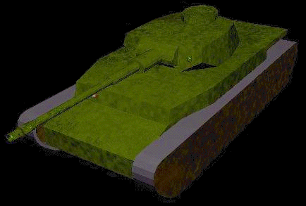

Recovered from the Wayback Machine (tardis.ed.ac.uk / javagameplay.com, 1996–2014 captures). Runs in the browser via CheerpJ. Click a game:

Copyright © 1996–2000 Ben Librojo. Recovered for preservation.